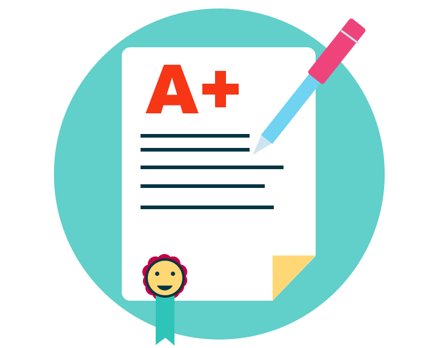

There are two ways to make a piece of writing interesting. Writing about interesting events;
writing in an interesting way.
The former is probably not possible. Simply because the admissions staff reading your
personal statement has probably read thousands of personal statements before. Plus, you may
have had the chance to do interesting things that other students did not have the chance to
do. This could make the admissions staff reluctant to be impressed by what countries you
travelled to or how many hospital placements you’ve been to abroad.
The latter way is usually the more efficient one. This is basically based on writing in a
way that grabs the attention of the reader. You don’t have to be a novelist for this, just
follow certain steps. For example, avoid being descriptive and try to be more reflective.
Write how certain events made you feel. Write about moments that made you question a belief
or thought you have always held etc. For example, “I found the GP’s empathy striking. The
fact that the patient feels like there is someone who listens to them and understands their
pain makes me feel that the GP’s empathy is part of the treatment”.
Remember: it’s all about what you learnt from doing something, rather than doing the
thing
itself. For example, an honest reflection of your 2-day GP placement is likely to be
more
impressive than a mere description of your 3-week hospital placement in South
Africa.
For more tips on acing your personal statement be sure to check out our guide.
Don't Forget Evidence!
This is straightforward. Never think that it is enough to make a claim just to impress
the reader. Always back it up with an event or an experience that demonstrates what
you’re claiming. For example, don't write,“I have the qualities of a leader”.
But instead
write,
“I use my leadership skills to manage my local cricket team. My duties include
organising events and ensuring the wellbeing of the players.”.
The lack of evidence may either make your statement go unnoticed. Or, even worse, some
admissions staff may be annoyed by too much lack of evidence!
Make It Personal...
This may seem too obvious since it is called ‘personal statement’, however, a lot of
students forget the personal aspect. Some applicants may be too keen to include generic
qualities and stories that they have heard of. Whilst this may work for some people, it
certainly won’t work for most. The best way to impress the reader of your personal
statement is by making it specific to you. Talk about your life experience, your
stories, your qualities.
This silly trick might help you achieve this goal. After you finish
reading your
statement, ask yourself: will you impress a first date if they read it? If so then
you’re not in a bad place. However, please remember that this is one aspect of the
personal statement only, qualities and attributes. I.e. a first date might not even care
about academia. So using this trick is potentially counterproductive for Oxbridge
applicants.
We explore how to come across as your own person in our interview
blog.

Know Your Statement!
During your interview, you may be asked to elaborate on something in more depth. Be sure
that you know your personal statement enough to talk about certain points when raised.
This does not mean memorise your statement off by heart but just be aware of the things
you claimed about yourself. For example, you may be asked to talk a little bit more
about some of the challenges you have faced as a leader for your local cricket team in
your interview.

Two Birds In One Stone...
Make sure you have read and understood, ‘Tomorrow’s
Doctors’, published by the GMC. Not
only will this be more preparation for the UCAT Situational Judgement section, but it’ll
also give you a good idea of the qualities and the attributes of the doctor you are
expected to be at the end of your training. You will most definitely be able to bring up
this guide in your interview. Doing so will surely impress the interviewer in front of
you.
To read more about how to write your personal statement and for more tips, check out our
guide and personal statement
service.